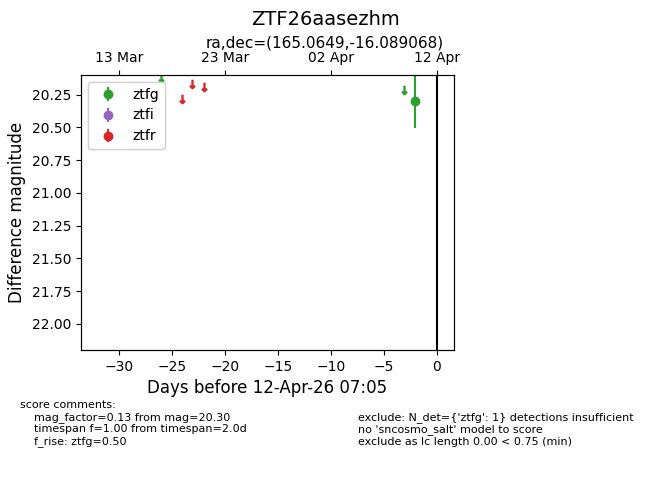
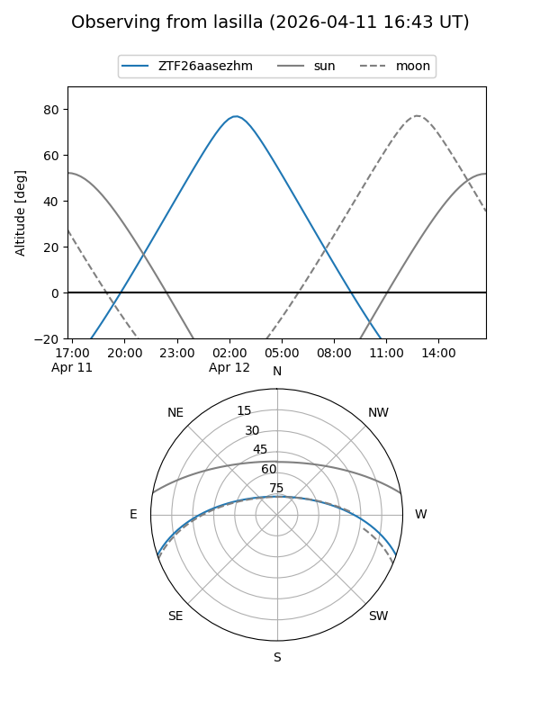
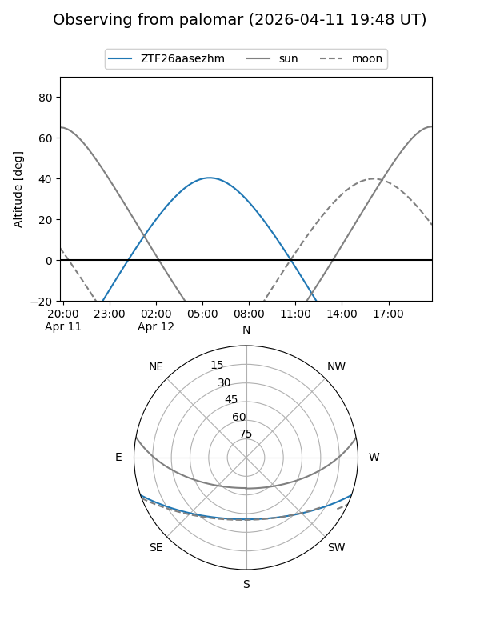

ZTF26aasezhm
Target ZTF26aasezhm at 2026-04-12 07:13
Aliases and brokers:
FINK: link
Lasair: link
ALeRCE: link
alt names
ZTF26aasezhm (ztf,fink_ztf)
Coordinates:
equatorial (ra, dec) = 165.0649,-16.08907
equatorial (HMS+DMS) = 11:00:15.56,-16:05:20.64
galactic (l, b) = (267.6929,+39.05757)
Flags:
Photometry:
last ztfg=20.30
1 ztfg detections
Lightcurve

Visibility


Additional plots